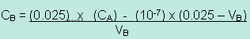

Unit 4: Solutions and Solubility
Activity 3: Reacting to a Solution
Assignment
 Assignment 1
Assignment 1
 Complete the following assignment and submit your work to the dropbox.
Complete the following assignment and submit your work to the dropbox.
Before you upload your file, ensure your name appears on the top of every page of your document.
You and your group have been appointed the safety captains for your chemistry class. In order to educate the class, your assignment is to research the following listed safety items and present them to the class in the form of a poster:
- Hazard symbols of WHMIS (The Workplace Hazardous Materials Information System);
- MSDS (Material Safety Data Sheet);
- General Safety Rules;
- Proper Hand Washing Techniques;
- Eye, Hand and Face Safety- Appropriate Personal Protection;
- Handling Glassware;
- Heat and Fire Safety;
- Emergency Procedures.
Rubric
 |
View the rubric for this assignment. View the long description of the rubric for this assignment. |
|---|
Assignment 2
Complete the following assignment and submit your work to the dropbox.
Before you upload your file, ensure your name appears on the top of every page of your document.
You are in charge of performing calculations for the preparations of some selected acids and bases. You will also be testing the pH levels of the acidic and basic solutions.
Please download or print a copy of the Solution Prep and Analysis Sheet . You will need this worksheet to complete this assignment.
 |
Use the interactive simulation pH Measurements of Acids & Bases. Please be aware, that, depending on your Internet connection speed, all clips on this page may take a few minutes to download. You can always continue reading the remainder of this page while you wait. |
|---|
Assignment 3
Complete the following assignment and submit your work to the dropbox.
Before you upload your file, ensure your name appears on the top of every page of your document.
Scenario:
You are an analytical chemist working in a lab where patience and attention to detail are very important components of the job. One of the analyses that you perform is an acid-base titration. It is a very common and popular chemical procedure that involves a chemical reaction when two solutions are mixed together. By mixing measured amounts and knowing the concentration of one solution, the concentration of another solution is helped by using an indicator to show the desired completion of the reaction. Upon completion of the procedure, a formula is given to you to help you with the calculations.
|
Watch the interactive simulation Acid-base Titration Simulation. Please be aware, that, depending on your Internet connection speed, all clips on this page may take a few minutes to download. You can always continue reading the remainder of this page while you wait. |
|---|
Follow these instructions as you proceed in setting up the titration
- Select the "Weak Acid vs Strong Base"
- Select the "Base" in "2. Fill the Burette with"
- Press the "Select the Acid and Base" button and then select "CH3COOH" as your acid and "NaOH" as your base.
- Select "Phenolphthalein" as your indicator.
Attention! Before you proceed with Step 5, the colour that you will be looking out for in the flask when you start adding the sodium hydroxide from the burette to the acetic acid in the flask is pink as shown in the example below.
If the colour of the pink becomes darker, then you have to start again. Be patient, you will just need to click on "Reset" and then start from the beginning.
- Start adding the sodium hydroxide solution by pressing on the "Dropwise" button to the right of the Erlenmeyer flask.
- If you use the "5. Push Slider Up to Add a Volume of Base" then the sodium hydroxide will pour out faster and you might pass the target colour of the indicator.
- Upon reaching the desired colour, record the following information:
Name of Acid:
Name of Base:
Name of Indicator:
Molar Concentration (Molarity) of acid, CA =
Volume of Acid, VA =
Volume of Base (NaOH Total Volume of Base), VB=
The calculation to find the concentration of the sodium hydroxide is as follows:
 = (Use significant figures.)
- Insert your answer into "6. After Titration. Calculate and Enter Molarity of Base" and press "OK"
- If you performed the titration with success and you did not make any calculation errors, then a message "Correct" will appear. If you made a mistake, then an "Incorrect" message will appear and you will need to click "Reset" and redo the experiment.
Knowledge and Understand marks = 10
Thinking Marks = 10
Communication marks =10
Application marks =10
 Resources
Resources
This is a disclaimer. External Resources will open in a new window. Not responsible for external content.
Unless otherwise indicated, all images in this Activity are from the public domain or are © clipart.com or Microsoft clipart and are used with permission.